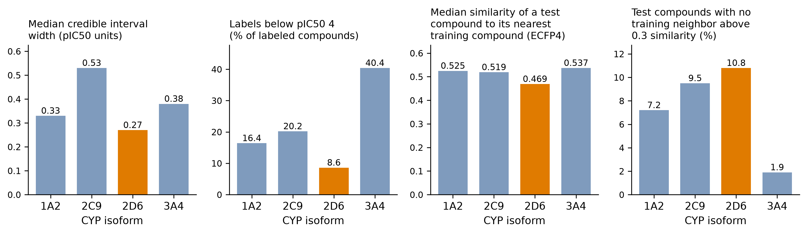
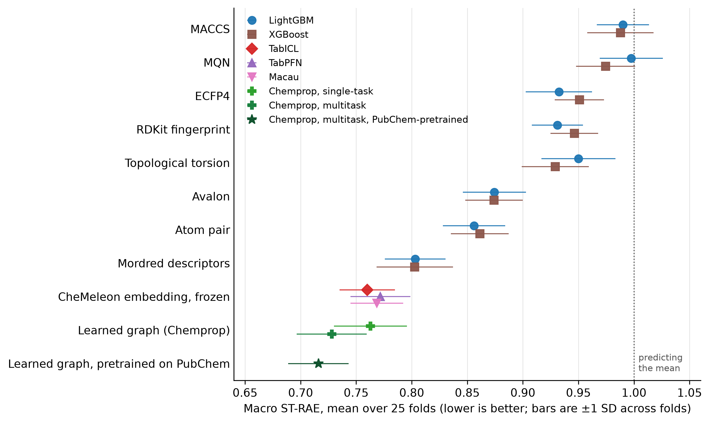
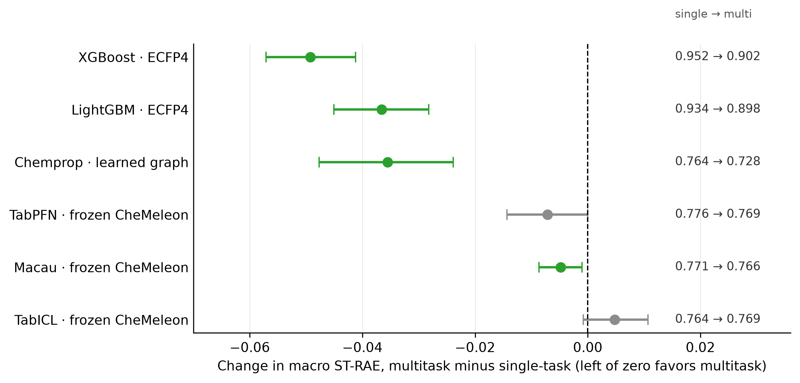
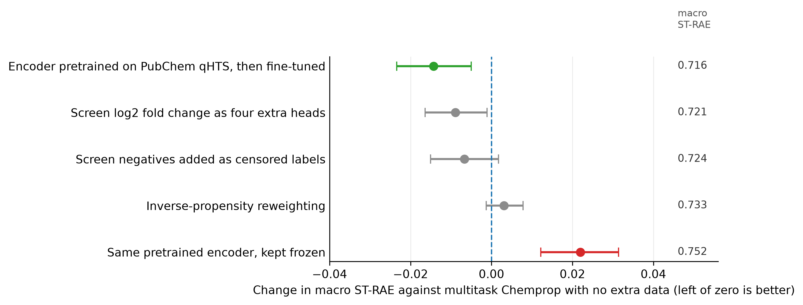
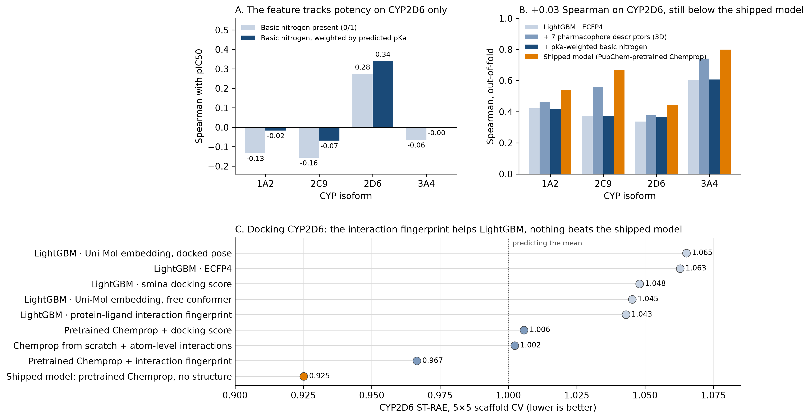
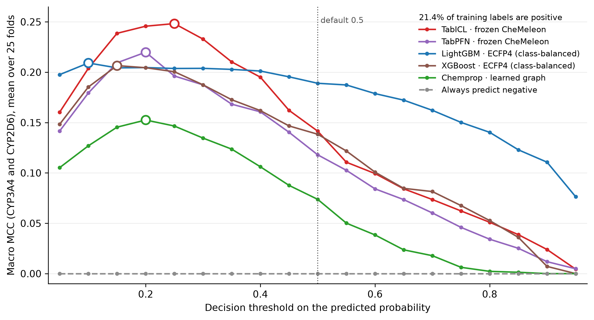
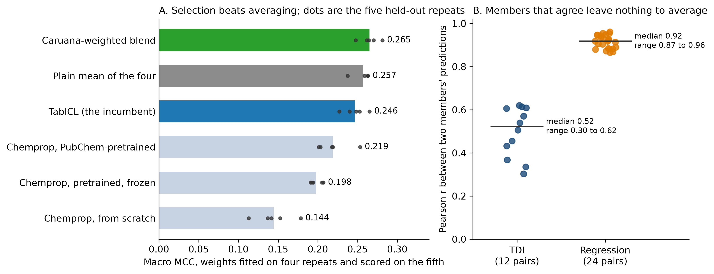
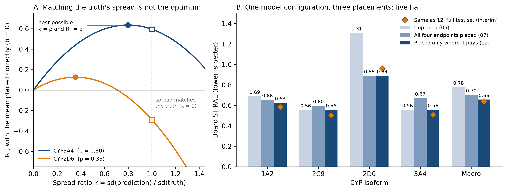
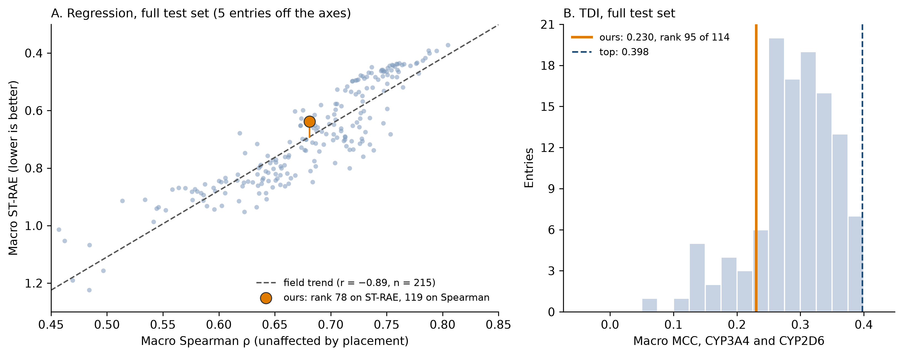

The intermediate deadline of the OpenADMET CYP inhibition challenge passed on September 24, and the interim leaderboard, scored once on the full 750-compound test set, came out the next day. My direct inhibition (regression) submission is at rank 78 of 219 with a macro ST-RAE of 0.6384. My time-dependent inhibition (TDI) submission is at rank 95 of 114 with a macro MCC of 0.2301. The leaders are at 0.3721 and 0.398.
That is a long way behind, and most of this post is about what I tried and what each attempt bought. In the last PXR post I said I would write one post on the work before the interim deadline and one at the end, and that I would pay closer attention to the confidence intervals around my numbers. This is the first of the two, even if it comes almost a month late. Two things that failed for me in PXR, multitask training and extra data, worked here, and the endpoint I hoped to fix with 3D chemistry did not move.
In this post I will cover:
- how different the four endpoints are for modeling
- whether the representation or the model moved the cross-validation score
- multitask learning and pretraining on public data
- four attempts to improve CYP2D6, all of which failed
- the TDI track, where the threshold mattered more than the model
- a placement correction I took from another team's notes
- what the interim leaderboard says about all of it
The code is in the public repository. The notebooks are numbered 01 to 14, and notebook 15 redraws every figure below from their outputs and a dated snapshot of the leaderboards.
Part 1: The data, the metric and the validation
The challenge now has three tracks and I entered two: direct inhibition (regression on the pIC50 for CYP1A2, CYP2C9, CYP2D6 and CYP3A4) and TDI (classification for CYP3A4 and CYP2D6, positive when the IC50 shifts more than two-fold after preincubation with the cofactor). I have not entered the new structure track.
The 4,905 training compounds have dose-response curves only where the primary screen flagged them, so each endpoint is labeled for a subset, from 1,285 compounds for CYP2C9 to 2,335 for CYP3A4. Of the 4,905, 1,309 (26.7%) carry more than one endpoint and only 41 carry all four. The test set is ten commercially available analogs for each of 75 hits against CYP1A2, CYP2C9 and CYP3A4, none from CYP2D6, and all 750 compounds were measured on all four isoforms. About 21% of the TDI labels are positive, so MCC is the metric and accuracy is useless.
ST-RAE scores a prediction by its distance to the nearest bound of the fitted curve's credible interval, so anything inside the interval costs nothing. The total is then divided by the same quantity for a constant predictor. Compounds below pIC50 4, under the lowest tested dose, are downweighted. The board ranks the macro-average over the four endpoints.

CYP2D6 is hard on three independent axes. It is the only isoform measured by mass spectrometry and not fluorescence, and it has the tightest intervals (median 0.27 pIC50 units against 0.33 to 0.53), which makes ST-RAE strict. Only 8.6% of its labels fall below the floor where the metric forgives, against 40.4% for CYP3A4. And its test compounds are the least like its training compounds, with a median nearest-neighbor Tanimoto of 0.469 on ECFP4 and 10.8% of them without a neighbor above 0.3.
Folds are scaffold-grouped 5×5 nested CV, because the test set is analogs of hits and a random split leaks near-duplicates. They are shared across endpoints, because with 1,309 compounds on several endpoints a per-endpoint split would put a compound in one endpoint's training set and another's test set. Every comparison is paired on the same folds, uses the difference in macro-averaged ST-RAE and is Holm-corrected within its family, with intervals from bootstrapping the 25 per-fold differences. Folds from different repeats overlap, so the intervals are narrower than the data supports, and I read them as a lower bound on the uncertainty.
The baseline was LightGBM on ECFP4, one model per endpoint. Only CYP3A4 learned from the fingerprints (ST-RAE 0.720), while CYP2C9 (0.961), CYP1A2 (0.986) and CYP2D6 (1.063) sat at or above the mean predictor. Linear calibration helped every endpoint, unlike PXR, where it looked like noise.
Part 2: The representation moved the score, the model barely did
The baseline pointed at the representation and not at tuning, so the first week went there. Notebook 03 runs LightGBM and XGBoost on eight fingerprint and descriptor sets, plus TabICL, TabPFN and Macau on CheMeleon embeddings and Chemprop trained from scratch. The tabular foundation models on CheMeleon came from a recent benchmark over 58 Polaris and MoleculeACE tasks, where that combination won most comparisons.

Moving from ECFP4 to a better representation bought 0.17 macro ST-RAE, and swapping the model on the same representation bought 0.012. LightGBM on ECFP4 scores 0.932 and TabICL on frozen CheMeleon 0.760. Mordred descriptors (0.803 for both tree models) and atom pairs (0.856 and 0.861) beat ECFP4, while MACCS and MQN sit at or just below the mean predictor. TabICL (0.7599), Chemprop from scratch (0.7628), Macau (0.7685) and TabPFN (0.7718) land within 0.012 of each other, so with 1,300 to 2,300 labels per endpoint it hardly mattered which of four unrelated architectures I used. I read that as the representation being the binding constraint, which says where the next gain has to come from: what the encoder has seen.
Part 3: Multitask learning works when the encoder is learned
In PXR almost every attempt to add a second task made the models worse. Here 26.7% of the compounds carry more than one endpoint, so I ran every model single-task and multitask on identical shared folds. "Multitask" means three different things. The trees and tabular foundation models get one stacked table of 6,525 rows with the endpoint one-hot encoded, Macau gets a sparse compound-by-endpoint matrix with missing cells left absent, and Chemprop gets one D-MPNN with four output heads and the unmeasured cells masked out of the loss.

Chemprop with a shared encoder and four heads went from 0.7635 to 0.7280 (−0.0355, 95% CI −0.0477 to −0.0239). That is the best score of any model in notebook 03, against 0.760 for the best single-task model. The trees on ECFP4 gain more (XGBoost −0.0492, LightGBM −0.0366), but they start at 0.93 to 0.95 and still end behind every model on CheMeleon. On the frozen embeddings the effect is small or absent: Macau improves by 0.0048 (CI −0.0087 to −0.0010), TabPFN by 0.0071 (CI −0.0143 to 0.0000, not significant after correction) and TabICL gets 0.0048 worse (CI −0.0008 to +0.0107).
Sharing a learned encoder helps, and pooling the rows of a frozen one does not. My explanation is the overlap, since a shared encoder gets labels for several endpoints from the 26.7% of compounds that carry them, but I have not tested it directly and the TDI track points the same way in Part 7. A practical note: after the MPS stalls came back I forced Chemprop onto the CPU, where it takes about 70 s per fold, 18% faster than the GPU baseline.
Part 4: Pretraining on public data
In PXR I never found a way to make auxiliary data help, and the top teams did. This time I tried five forms of it, each against the multitask Chemprop of Part 3, so a difference is attributable to the data and not to the architecture.
The public corpus is the NCGC qHTS cytochrome panel (Veith et al.), deposited in PubChem as one assay per isoform (AIDs 410, 883, 884 and 891). With every challenge structure removed it has 12,719 compounds and 37,963 isoform labels, against 6,525 labels in the challenge's own dose-response table. I chose it over ChEMBL because it is a single protocol, and PXR's lesson was that heterogeneous auxiliary data hurt. Structures are matched on the connectivity block of the InChIKey and not on SMILES, which separates stereoisomers, tautomers and salts that are the same compound for leakage purposes.
The five arms:
pubchem: pretrain the encoder on the public assays, then fine-tune it unfrozen on the four challenge endpointspubchem_frozen: the same pretrained encoder, kept frozenaux_screen: the challenge's own single-concentration screen as four extra regression headsaugmented: screen negatives added as censored labelsselection: inverse-propensity reweighting, for the primary screen choosing which compounds get a curve

aux_screen interval excludes zero and still fails the correction.
Pretraining on PubChem and fine-tuning the whole encoder improved macro ST-RAE from 0.7304 to 0.7160 (−0.0143, 95% CI −0.0234 to −0.0050).
Keeping the pretrained encoder frozen made it 0.0220 worse than no pretraining at all (CI +0.0122 to +0.0314), so the gain is in the initialization and not in the features.
That is Part 3's lesson from the other direction: a learned encoder helps when it can adapt to the assay, and the same encoder frozen does not.
The challenge's own screen as extra heads improved by 0.0089 (CI −0.0164 to −0.0011), but its p-value of 0.026 misses the Holm threshold of 0.017.
Notebook 05 called it significant, but it bootstraps the 32,625 pooled out-of-fold rows and each compound appears in five outer repeats, so I think those intervals were too narrow.
augmented and selection are unresolved, and selection is the worst of the six arms on CYP2D6 (0.9373), the endpoint it was built for.
The size of these gains is less certain than the intervals suggest.
Chemprop's pretraining has no seed control, and rerunning the same configuration in notebook 07 gave a CV macro ST-RAE of 0.7075 instead of 0.7160.
That 0.0085 is more than half the gain I am claiming.
I trust the direction, because the frozen arm moves the other way by 0.022, but I would not quote the size to better than about ±0.01.
I also tried wider unions of public data as extra heads (the PubChem maximum response, ChEMBL 37 and Tox21), and none of three variants beat PubChem alone (differences of −0.0059, +0.0027 and +0.0082, none resolved).
No data arm moved CYP2D6 below 0.917, and the shipped pubchem model scores 0.9251 on it.
Part 5: CYP2D6 is hard
CYP2D6 sets my macro score, with a CV ST-RAE of 0.925 against 0.486 for CYP3A4. I tried four routes to improve it, and each failure left a rule I expect to reuse. Three of them test a hypothesis I have carried since the first day: CYP2D6 binds through a basic nitrogen and an aromatic ring that circular fingerprints express poorly, so a better description of that pharmacophore should help CYP2D6 selectively.
Emax as a two-stage feature (notebook 08). The training data include each compound's Emax, the maximal effect from the same fitted curve as the pIC50, and the blind set does not, so predicting Emax could pass it on as a feature. The oracle says it would pay: the true Emax moves CYP2D6 Spearman from 0.3274 to 0.8137. The predicted Emax moves it to 0.2296, below the baseline. Emax and pIC50 exist for exactly the same compounds (1,493 of 1,493 for CYP2D6), so the first stage gains no coverage, and Emax is less predictable from structure (Spearman 0.207) than the target is (0.33). An auxiliary variable is usable as a two-stage feature only if it is more predictable from structure than the target is.
3D pharmacophore geometry (notebook 09). Through-space distance from the basic nitrogen to the nearest aromatic ring, from ETKDG conformers, tracks CYP2D6 potency better than bond-count distance does (Spearman −0.165 against −0.122). It does the same on CYP1A2 (−0.116 against −0.063), so it is not the CYP2D6-specific signal the mechanism predicts. Adding seven pharmacophore descriptors to ECFP4 lifts LightGBM on every endpoint, by +0.188 Spearman on CYP2C9, +0.136 on CYP3A4, +0.043 on CYP1A2 and +0.040 on CYP2D6, so the gain on CYP2D6 is no larger than on CYP1A2 and a fraction of the other two. In the PubChem-pretrained Chemprop the same descriptors made all four endpoints worse, CYP2D6 by 0.022 Spearman. This is a better featurizer for a tree on fingerprints, and not evidence for CYP2D6-specific geometry.
A sharper basic-nitrogen feature (notebook 10). The binary basic-nitrogen flag gives pKa 10 and pKa 4.5 the same weight, so I replaced it with the fraction protonated at pH 7.4, from per-atom pKa predicted by a vendored MolGpKa network. On its own it is the most CYP2D6-selective signal in any notebook: its Spearman with potency rises from 0.276 to 0.342 on CYP2D6 while the other three endpoints move toward zero. Inside LightGBM with ECFP4 it buys nothing over the binary flag (+0.0316 against +0.0319 Spearman on CYP2D6), which I think is because the ECFP bits around the nitrogen already tell a tree enough to grade it. A better correlation for an auxiliary feature does not predict a model gain when a rich representation is already present, so check the lift against the features already in the model.
Docking (notebook 11). gnina is CUDA-only and my machine is an arm64 Mac, so I used smina, the Vina fork it derives from, and gave up gnina's CNN rescoring. Interaction fingerprints (ProLIF) computed on the docked CYP2D6 poses do show the pharmacophore. Hydrogen-bond contacts with Glu216 and Asp301, the acidic residues the literature gives for the basic nitrogen, appear in 10% and 4% of poses, and the hydrophobic Phe120 contact in 82%. In LightGBM the interaction fingerprint beats ECFP4 (−0.0196 ST-RAE, CI −0.0297 to −0.0097, Holm-significant), and so does the docking score alone (−0.0150). Uni-Mol embeddings of the docked pose are slightly worse than those of the free conformer (+0.0194), as expected for a model pretrained on isolated ligands. None of it reached the shipped model: the best Chemprop arm with the interaction fingerprint scored 0.9665 on CYP2D6 against 0.9251 for the pretrained model that never saw a protein. One mistake here was the budget. I estimated about seven hours to dock all four isoforms, and docking CYP2D6 alone took 15.6 hours, because chunk times varied 30-fold under ordinary desktop contention (Photos indexing sat at 66 to 94% CPU in two of the slow chunks).

The basic-nitrogen and docking routes both show signal for the mechanism, the 3D geometry route does not, and none of the three beats the shipped model. I think the pharmacophore is not the bottleneck. The scorecard in Part 1 points elsewhere, since CYP2D6's test compounds have the lowest similarity to the training set and the most extrapolation, which makes it look like a chemical-space coverage problem. I do not have a fourth idea for the pharmacophore.
Part 6: Uncertainty
ST-RAE scores zero inside the credible interval, so notebook 06 screened Chemprop's four built-in methods for uncertainty estimation on one outer repeat (5 folds).
The test was the Spearman correlation between a prediction's absolute error and the uncertainty the method claims for it.
Mean-variance estimation scored 0.172, MC dropout 0.087, a checkpoint ensemble 0.080 and evidential regression 0.015, which has the most appealing theory and was uninformative.
Promoting mean-variance estimation to the full 5×5 gave 0.253 on CYP1A2, 0.148 on CYP2D6, 0.143 on CYP3A4 and 0.127 on CYP2C9.
That is real signal and far too weak for inverse-variance weighting or an uncertainty-aware calibration.
There is also a hard constraint: the submission has no interval column, because _conf_low and _conf_high belong to the ground truth, so uncertainty can change how a prediction is built and never what is reported.
I shipped nothing from this notebook.
Part 7: The TDI track
I focused most of my effort on the regression track, and the TDI track suffered for it. It produced one lesson about thresholds and one small gain.
The decision threshold mattered more than the model, and 0.5 is badly wrong. A classifier whose probabilities match a 21% base rate rarely crosses 0.5. At 0.5 Chemprop calls 5% of compounds positive and scores a macro MCC of 0.074, against 0.153 at its best threshold of 0.2, and TabICL goes from 0.141 at 0.5 to 0.248 at 0.25. Every model's optimum fell between 0.10 and 0.25. LightGBM is flatter because class weights inflate its probabilities (it calls 17% of compounds positive at 0.5), so a comparison at the default cutoff partly ranks models by how inflated their probabilities are. I tuned the threshold on out-of-fold predictions before comparing anything.

A threshold tuned on the folds it is scored on is also optimistic as a reported number. For the TabICL submission the out-of-fold CYP3A4 MCC was 0.375 and the live board returned 0.305, while CYP2D6 landed almost exactly (0.122 against 0.117).
Multitask does not transfer, and Chemprop is last. Only 259 of 4,822 TDI compounds (5.4%) carry both isoforms, against 26.7% for regression, and there are two tasks instead of four. At each arm's own best threshold every multitask difference was negative, and only XGBoost's was resolved (−0.0342 macro MCC, 95% CI −0.0517 to −0.0172). Chemprop, which won the regression track, scores 0.1525 against TabICL's 0.2483. That fits the overlap explanation from Part 3, but it is not a test of it.
Pretraining transfers, and still loses to TabICL. I pretrained Chemprop on the public panel binarized into active and inactive calls. Notebook 13 retrained every arm, including TabICL, so its numbers differ slightly from the ones above (TabICL 0.2465 against 0.2483, Chemprop from scratch 0.1447 against 0.1525). It beats Chemprop from scratch (0.2182 against 0.1447) by +0.0735 (95% CI +0.0533 to +0.0941), the first sign that Part 4's biggest lever works on classification. Unfrozen against frozen (0.1976) is unresolved here (+0.0206, CI −0.0028 to +0.0443), where on regression freezing was clearly worse. The pretrained model is still behind TabICL (−0.0281, CI −0.0531 to −0.0038). Without the from-scratch control the table would have read as "Chemprop is bad at TDI", attributing to the architecture what belongs to the initialization.
A two-stage model through the pIC50 shift fails for the reason Emax did. The label is a thresholded shift between two pIC50 values that both exist for almost every labeled compound, and thresholding the true shift would score an MCC of 0.687 on CYP3A4 and 0.898 on CYP2D6. But the shift is barely predictable from structure (Spearman 0.216 and 0.124), and the two-stage model scored 0.174 and 0.119 against 0.250 and 0.163 for a plain classifier. Emax failed on coverage and this fails on predictability, since a difference of two noisy quantities amplifies the noise.
An ensemble is the only thing that beat the TabICL incumbent. It is a Caruana-weighted blend of four arms from notebook 13: TabICL on frozen CheMeleon and three Chemprop variants (pretrained, pretrained and frozen, from scratch). The weights are fitted on four outer repeats and scored on the fifth, rotated, because selecting weights and scoring them on the same predictions measures the selection and not the ensemble.

The blend reaches a macro MCC of 0.2650 against 0.2465 for TabICL, a gain of +0.0185 (95% CI +0.0048 to +0.0321, resampling compounds with all their repeats). A plain mean of the same four arms gains +0.0103 (CI −0.0091 to +0.0298), which is unresolved, so the weights are doing the work and not the averaging. CYP3A4 carries the gain (+0.0206, CI +0.0066 to +0.0346). CYP2D6 moves the same way (+0.0165) on half the data and its interval includes zero (−0.0071 to +0.0401), so I do not claim an ensemble gain there. The weights are stable across the ten held-out fits, with TabICL at 0.49 to 0.61 and the pretrained Chemprop at 0.20 to 0.27.
Panel B suggests why this works here and not on the regression track. The four TDI arms correlate at 0.30 to 0.62 (median 0.52), because three of them are a different model family from the incumbent. The four regression arms of notebook 07 correlate at 0.87 to 0.96 (median 0.92), since they are four variants of one pretrained Chemprop, and a blend of those has nothing to average away.
The board agrees with the CV on one isoform and not on the other. On the live half the ensemble scored 0.3527 on CYP3A4 against 0.305 for the TabICL submission it replaced, the direction the CV expected, and 0.0528 on CYP2D6 against 0.117, where the CV difference (+0.017) was unresolved either way. The macro score went from 0.2111 to 0.2028, which half of a 750-compound test set cannot resolve, so I cannot say the ensemble helped on the board.
Part 8: Placement
The largest single gain on the board came from a change that involved no new model or encoder. I took the idea from the working notes of another team, SuperCowPowers, who published their pipeline and code.
A prediction vector carries two separable things: the order of the compounds, and where that order sits on the pIC50 axis. R² factors exactly as 2ρk − k² − b², with ρ the Pearson correlation, k the ratio of the standard deviation of the predictions to that of the truth, and b the offset of the mean in units of the truth's standard deviation. Only ρ depends on the model, and k and b are set by an affine transform, which cannot change a single rank. So R² is capped at ρ², reached at k = ρ and not at k = 1: a model that correlates 0.7 should be 70% as wide as reality. And since the board reports R² and Spearman per endpoint, each returned score is an equation in the mean and standard deviation of the half of the test set the live board scores. Two scored submissions for the same endpoint give two equations, and solving them gives an estimate of those two moments, which is what I placed the predictions against.
My first PubChem-pretrained submission, with no correction, had an R² of −0.742 on CYP2D6 with a Spearman of 0.340. A Spearman of 0.34 caps R² at about 0.13, so the ordering did not produce −0.742. The model was predicting a population far from where the CYP2D6 test set sits, which is what I would expect from a hit-enriched training set when the test compounds were not selected from CYP2D6 hits. Scaffold CV cannot see that, because its folds share the training distribution: the R² an affine correction could recover on the out-of-fold predictions is 0.000 to 0.002 on every endpoint.

I submitted three versions. Unplaced it scored a macro ST-RAE of 0.7785. Placing all four endpoints at the R² optimum scored 0.7040, with CYP2D6 carrying the gain (R² from −0.742 to +0.223). CYP3A4, already at 96% of its R² ceiling, got worse (0.5586 to 0.6725), and so did CYP2C9 (0.5567 to 0.5975), so placement on an endpoint that is already well placed is a cost and not a no-op. The third version placed only where the recoverable R² (ρ² minus the R² achieved) was above 0.05, a gap with a ten-fold separation between the two groups of endpoints. It placed CYP1A2 at the ST-RAE optimum and not the R² optimum, because the metric is zero inside the wide intervals that low-activity compounds carry, which puts the optimum above the true center and narrower than ρ times the standard deviation. The SuperCowPowers notes make the same point: the calibration that maximizes R² does not minimize the scored metric. That version scored 0.6578 on the live half, and the three endpoints that reused earlier vectors returned their earlier scores to four decimals, days apart, so the live half is stable.
Two of my own checks failed. The simulator I built to choose the CYP1A2 placement forecast 0.4223 (bracketed as 0.42 to 0.51) and the board returned 0.6256, a miss of 0.203 against errors of 0.040 and 0.128 in its own back-test. Bracketing a forecast by previously observed errors assumes they are bounded by what I have seen, and with two observations they are not. The second failure is the more instructive one. Two scored vectors always intersect somewhere, so the tight agreement between my two-vector solves (a disagreement of 0.003) measured only that a solution exists. A third CYP1A2 vector made the system overdetermined for the first time, and the three pairwise solves disagreed by 0.5 pIC50 on the center, with an overall disagreement of 0.28, close to the 0.3 limit I had set for using a solve. I treat the solved moments as a direction and not as a measurement.
I am conflicted about this technique. On one reading, the board publishes R² and Spearman for every endpoint, so the organizers chose to release the information the correction uses, and using it is ordinary use of public feedback. On the other, it is information about the hidden test set that nobody intended to be recoverable, and nothing about my model improved: not one ranking changed. What worries me is the consequence. If leaderboard probing becomes standard, the cheapest fix for an organizer is to stop running a live leaderboard, and the live leaderboard drives a lot of engagement to these challenges. The one saving grace, which the organizers also highlighted, is that optimizing for the live leaderboard might make your final submission, which uses a different test set, worse than expected.
Part 9: The interim leaderboard
The interim board scores all 750 compounds, which makes it the first look at the half of the test set that the live board never showed.

Across the field, macro ST-RAE is mostly a function of macro Spearman (r = −0.89 over 215 entries). Spearman does not depend on placement, so a point's distance from the trend is what placement and calibration add beyond ordering. My ordering ranks 119th of 219 and my ST-RAE ranks 78th. My macro Spearman is 0.681 (median 0.6865, best 0.8048), and my ST-RAE sits 0.053 below the trend, with 30% of the field further below it. I attribute that distance to placement, since it is the one thing I did that moves ST-RAE without moving Spearman.
| Endpoint | ST-RAE | Rank | Field median | Best | Spearman | Rank | Best |
|---|---|---|---|---|---|---|---|
| CYP1A2 | 0.5827 | 75 | 0.6673 | 0.3752 | 0.7618 | 105 | 0.8507 |
| CYP2C9 | 0.5040 | 105 | 0.5125 | 0.3130 | 0.7838 | 110 | 0.8862 |
| CYP2D6 | 0.9603 | 85 | 1.1794 | 0.4568 | 0.3502 | 156 | 0.5982 |
| CYP3A4 | 0.5068 | 105 | 0.5144 | 0.3331 | 0.8283 | 95 | 0.8903 |
| Macro | 0.6384 | 78 | 0.7064 | 0.3721 | 0.6810 | 119 | 0.8048 |
On CYP2C9 and CYP3A4 I am at or slightly better than the field median in both metrics. On CYP2D6 my ordering ranks 156th and my ST-RAE 85th, and the median entry scores 1.18, worse than predicting the mean, with a median R² of −0.56, which suggests many entries have the placement problem I started with.
I began the placement work believing that most of the gap to the leaders was placement. The numbers say otherwise. On the live half, placement and a refit took me from 0.7785 to 0.6578, which is 0.12 of the 0.40 gap to the live leader (0.3772), about 30%. The best Spearman on each endpoint is 0.06 to 0.25 above mine, and placement cannot touch that. At the field's trend, the 0.12 of macro Spearman between me and the best entry is worth about 0.29 of ST-RAE, more than the 0.27 I am behind.
The CV expectation for the unplaced model was 0.7160 and the live half returned 0.7785, but that ratio of 1.09 hides opposite errors: the CV was conservative on CYP1A2 (0.8216 expected, 0.6887 returned) and CYP2C9 (0.6310 and 0.5567) and optimistic on CYP3A4 (0.4864 and 0.5586).
The full-set scores are also the first test of whether the placement transfers. The moments I solved describe only the live half, and the 750 compounds were split by chemical series, so there was no guarantee. Three endpoints scored 0.043 to 0.053 better on the full set than on the live half, and CYP2D6 scored 0.070 worse (0.8902 to 0.9603). That is consistent with the CYP2D6 correction transferring less well to the other half, but I cannot separate it from the other half being harder for CYP2D6, and its Spearman also fell by 0.011.
On TDI the full-set CYP3A4 MCC of 0.3836 (rank 78 of 114, top 0.5207) is within 0.011 of what the CV expected for the ensemble, and CYP2D6 at 0.0765 (rank 100, top 0.345) is 0.059 below it.
What I take from this
The result I trust most is the simplest one. What the encoder had seen moved the score far more than the choice of model, and the two techniques that failed for me in PXR work when the encoder is learned. Multitask learning with a shared learned encoder gained 0.0355 macro ST-RAE, and pretraining on public data with the encoder unfrozen gained another 0.014, which my own rerun says I cannot pin down better than ±0.01.
After notebook 05 nothing I did to the regression model moved it.
Uncertainty, Emax and three routes to the CYP2D6 pharmacophore all ended in shipping pubchem as it was, so that effort was sadly wasted.
They did leave rules I expect to reuse, and the TDI ensemble left one more:
- an auxiliary variable helps as a two-stage feature only if it is more predictable from structure than the target is
- a better auxiliary feature has to be judged against the features already in the model, not against nothing
- the oracle column of a two-stage model means nothing until the predictability column is read
- members that agree leave a blend nothing to average, so check their correlation first
What is not established is why I am 0.27 macro ST-RAE behind the leaders. Ordering seems to account for it, and I do not know why mine is worse. The one comparison I can make is with the team whose notes I used. They average four Chemprop models trained on the challenge data plus ChEMBL and the NCATS qHTS panel, 31,670 compounds and 161,400 labels in total, against the 12,719 compounds and 37,963 labels I pretrained on. I tried ChEMBL as extra heads and it did not help, but pretraining and training on pooled labels are different things, and I have not tried the second. That is a guess about their pipeline and not a result.
Also not established is whether the placement transfers to the final scoring, where CYP2D6 disagrees with the other three endpoints, and whether the TDI ensemble helps on the board, where it moved in opposite directions on the two isoforms.
Next steps
The final submission deadline is November 3. I will choose between candidates on the paired comparisons and not on a sort by board score, and say which of the differences I relied on were resolved. The open items I can see are training on the pooled public labels instead of pretraining, a seed-controlled rerun of the pretraining to put a real interval on its gain, and a decision on whether placement stays in the final regression submission, given what CYP2D6 did on the full set. The post at the end of the challenge will report how all of this held up on the final labels.
If you reached the end, thank you for reading. This was a very long post.